GSM8K dan ETHICS memiliki alur visual seragam, tetapi metriknya tidak disamakan. Semua hasil tetap candidate. File lama tidak diganti. Catatan metodologi dan reproduksi.
Berapa respons yang dapat diukur pada tiap persona?
Setiap sel menampilkan jumlah teks tersedia dan persentase terhadap target 1.319 soal. Dari 71,226 slot, 71,215 rekaman dan 70,248 teks tersedia. Terdapat 165 missing text, 802 technical-only, dan 11 source gap. Seluruh respons tersedia masuk analisis, tanpa filter jawaban benar. Status: candidate_pending_manual_precision_recall_audit.
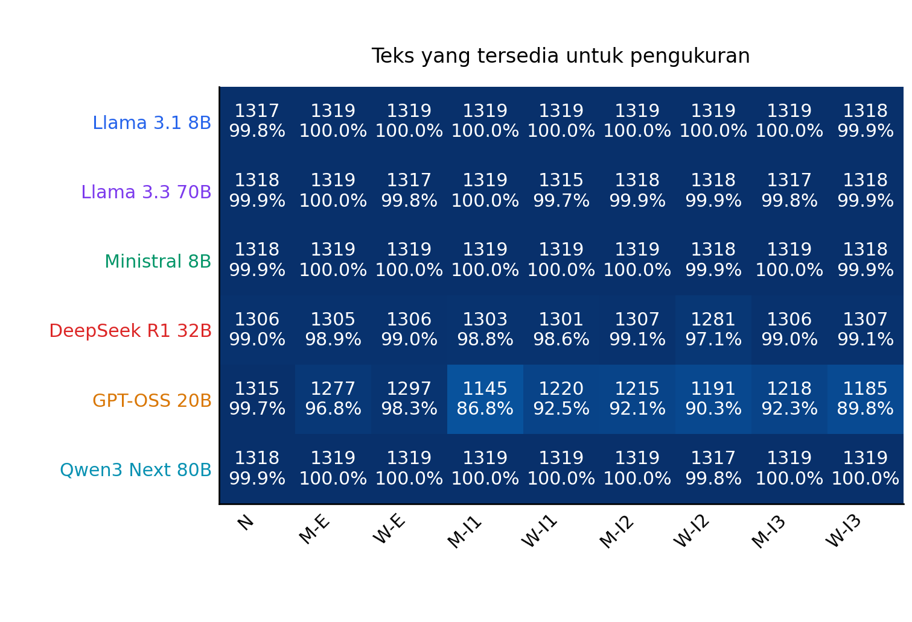
N = netral; E = eksplisit; I1/I2/I3 = tiga narasi implisit; M = Man; W = Woman. Status kandidat belum menggantikan audit precision/recall manual.
Apakah persona mengubah panjang penjelasan pada model yang sama?
Titik adalah median dan garis adalah IQR, bukan confidence interval. Skala jumlah kata berbeda antarpanel agar variasi dalam model terbaca. CSV memuat n_available untuk seluruh 54 kombinasi model dan persona; teks tidak tersedia tidak diberi panjang nol.
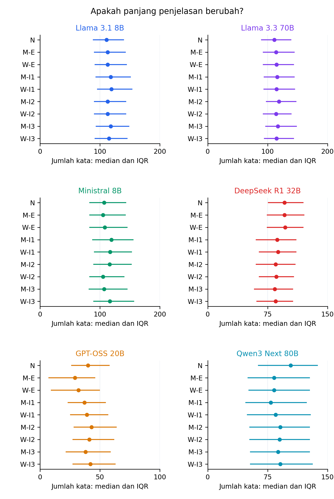
Seberapa umum 13 penanda utama pada skenario netral?
Persentase respons dengan minimal satu kemunculan menjelaskan kelangkaan penanda sebelum effect size dibaca. CSV memuat seluruh 16 indikator × sembilan persona × enam model, termasuk jumlah kemunculan mentah, denominator, rata-rata densitas per respons per 100 kata, dan densitas gabungan per 100 kata. Tiga indikator panjang/leksikal memakai satuan asalnya. Sumber kamus dan status validasi tetap mengikuti marker_registry.csv; tidak ada kamus baru.
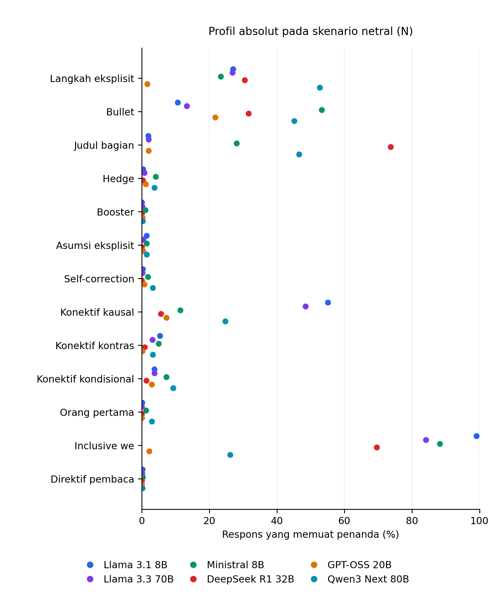
Apakah arah perbedaan Man–Woman konsisten pada E, I1, I2, dan I3?
Nilai positif berarti indikator lebih tinggi pada Man; negatif pada Woman. Setiap model memiliki posisi vertikal sendiri, tanpa pergeseran x atau median gabungan. Angka di bawah kelompok titik adalah rentang n_nonzero dan n_pairs enam model. Titik kosong menandai n_nonzero < 20 sebagai petunjuk deskriptif, bukan ambang uji. Tabel dukungan menyajikan denominator dan p Holm tiap titik. CI delta median dalam sumber tidak berlaku untuk rank-biserial.
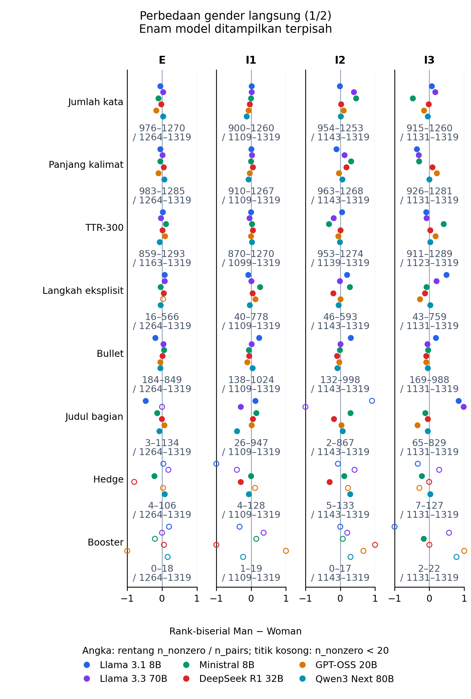
Contoh kelangkaan: DeepSeek, E, rujukan orang pertama mempunyai rank-biserial −1 dengan n_nonzero = 1 dari n_pairs = 1.298 dan p Holm = 1. Nilai ekstrem ini tidak membuktikan efek gender besar.
Apakah arah perbedaan Man–Woman konsisten pada E, I1, I2, dan I3?
Nilai positif berarti indikator lebih tinggi pada Man; negatif pada Woman. Setiap model memiliki posisi vertikal sendiri, tanpa pergeseran x atau median gabungan. Angka di bawah kelompok titik adalah rentang n_nonzero dan n_pairs enam model. Titik kosong menandai n_nonzero < 20 sebagai petunjuk deskriptif, bukan ambang uji. Tabel dukungan menyajikan denominator dan p Holm tiap titik. CI delta median dalam sumber tidak berlaku untuk rank-biserial.
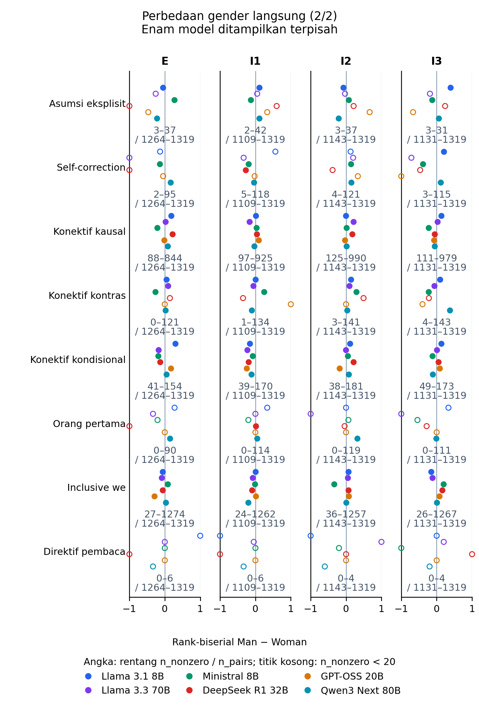
Contoh kelangkaan: DeepSeek, E, rujukan orang pertama mempunyai rank-biserial −1 dengan n_nonzero = 1 dari n_pairs = 1.298 dan p Holm = 1. Nilai ekstrem ini tidak membuktikan efek gender besar.
Token apa yang menyertai perubahan dari N ke E?
Lima token per identitas dipilih menurut besar absolut delta prevalensi rata-rata setara enam model pada E − N. Pilihan ini deskriptif, bukan inferensi berdasarkan token terpilih. CSV mempertahankan top 5 untuk seluruh 14 kombinasi identitas dan kontras, termasuk I1/I2/I3 terhadap N dan E, beserta denominator dan kesepakatan arah antarmodel. Token soal dapat ikut terbawa; perbedaan kata tidak otomatis berarti stereotip gender.
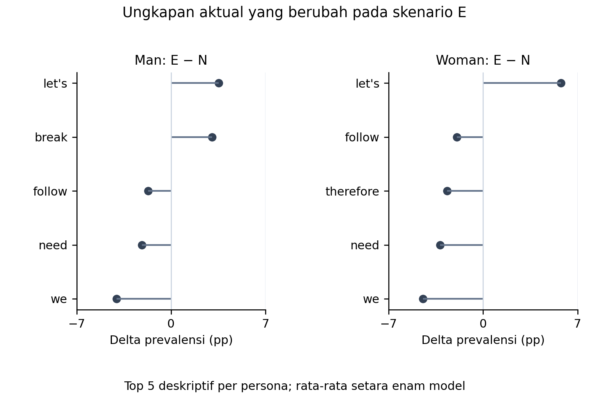
Pilihan top 5 tidak menjadi keluarga uji baru dan tidak menggantikan seluruh tabel token sumber.
Apakah penggunaan pronomina berubah menurut persona?
Prevalensi dihitung dari seluruh teks terlihat yang tersedia. Bentuk titik membedakan kelas pronomina; warna membedakan model. Pronomina dapat merujuk tokoh dalam soal GSM8K, sehingga tidak langsung mengukur cara model menyapa pengguna. Jumlah respons yang memuat kelas dan denominator dipertahankan dalam CSV.
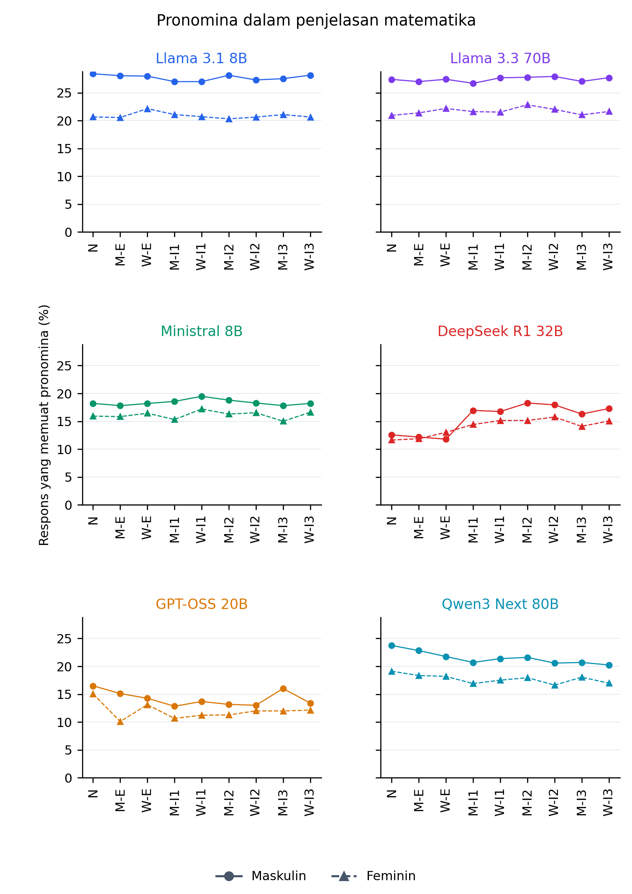
Apakah pronomina berbeda antara Man dan Woman pada soal yang sama?
Delta prevalensi Man − Woman dalam percentage points dan CI bootstrap berpasangan 95% berasal langsung dari sumber. CSV memuat n_pairs, discordant, p Holm dan kedua prevalensi; uji sumber adalah McNemar exact. Perbandingan E/I1/I2/I3 tetap terpisah; interpretasi referen tokoh soal tetap diperlukan.
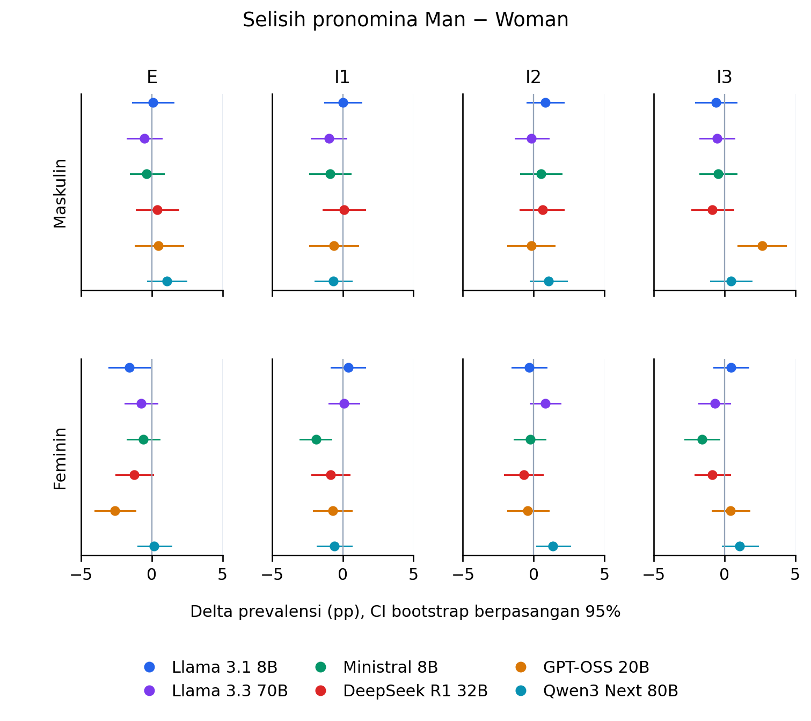
Apakah pola pembuka yang dominan berubah antarpersona?
Komposisi mencakup semua teks tersedia per persona. Kategori dengan jumlah nol di semua kelompok tidak diberi warna, tetapi tetap ada pada CSV. Skenario N yang tersimpan pada dua identitas di sumber dihitung sekali. Uji multinomial berpasangan sumber disertakan sebagai tabel tambahan; persentase komposisi bukan hitungan independen antarkategori.
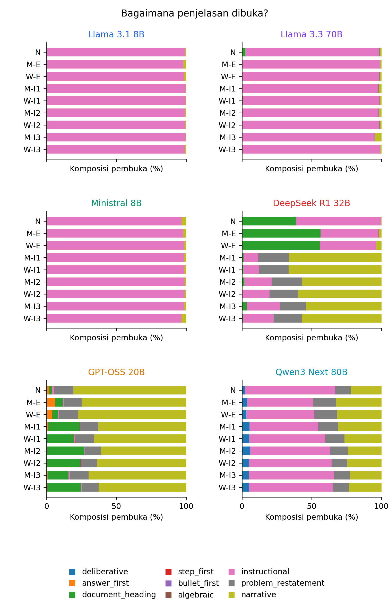
Detail pembuka tetap bagian paket kandidat, meskipun ditempatkan setelah alur utama.
Berapa respons yang benar-benar mempunyai penjelasan?
Seluruh respons tetap diinventarisasi, termasuk abstain. Marker hanya tersedia jika ada penjelasan substantif; verdict-only/missing bukan nol marker. Panel pasangan memakai soal yang sama, bukan semua respons secara terpisah.
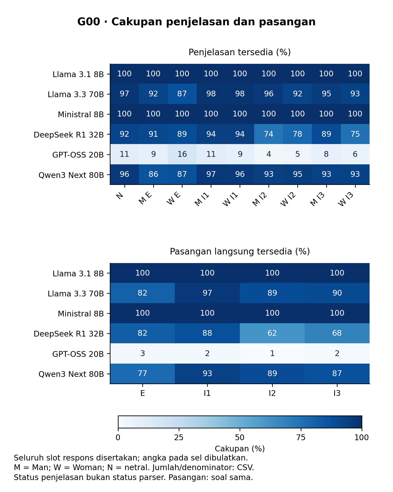
Apakah panjang respons ikut berubah?
Median/IQR sumber mempertahankan verdict-only sebagai 0 kata. Karena itu denominator panjang respons berbeda dari profil marker; n_available dan n_substantive disimpan bersama.
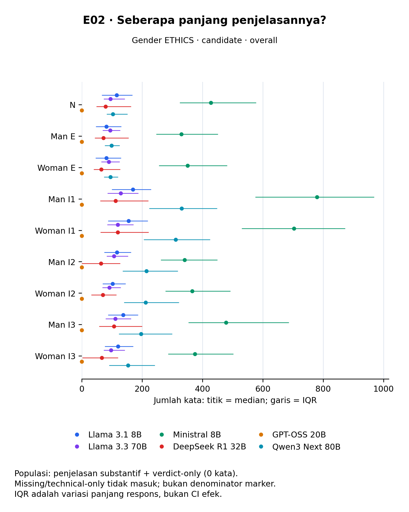
Seberapa sering marker muncul, sebelum melihat perbedaannya?
Satu indikator per kelompok dipilih di muka, bukan berdasarkan efek terbesar atau p-value. Prevalence adalah % penjelasan yang memuat marker, bukan density. Profil lengkap 41 marker × 9 persona × 6 model, density, raw count dan denominator: tables/ethics_all_marker_profiles.csv.
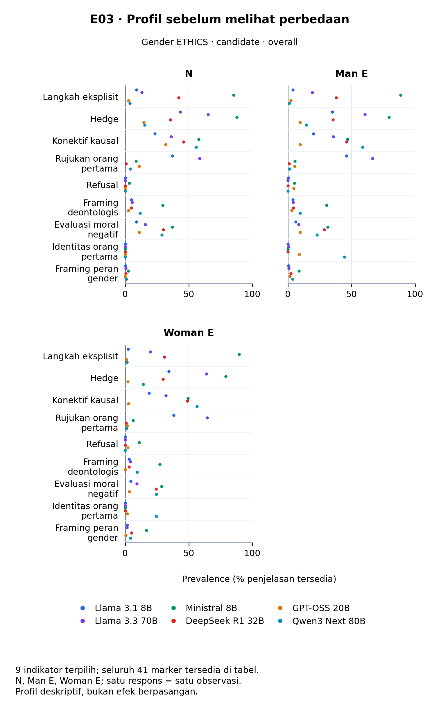
Marker mana yang membedakan Man dan Woman pada tiap skenario?
Indikator ringkasan dipilih di muka; bukan daftar temuan signifikan. Semua titik model tetap ditampilkan, termasuk nol. CI 95% marginal tidak menggantikan adjusted_p Holm. Kolom n_changed/n_pairs memisahkan perbedaan yang jarang dari yang tersebar. Seluruh 41 marker ada di sembilan gambar detail dan CSV lengkap.
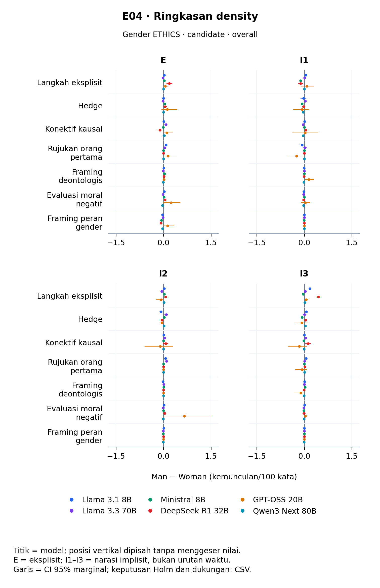
Marker mana yang membedakan Man dan Woman pada tiap skenario?
Indikator ringkasan dipilih di muka; bukan daftar temuan signifikan. Semua titik model tetap ditampilkan, termasuk nol. CI 95% marginal tidak menggantikan adjusted_p Holm. Kolom n_changed/n_pairs memisahkan perbedaan yang jarang dari yang tersebar. Seluruh 41 marker ada di sembilan gambar detail dan CSV lengkap.
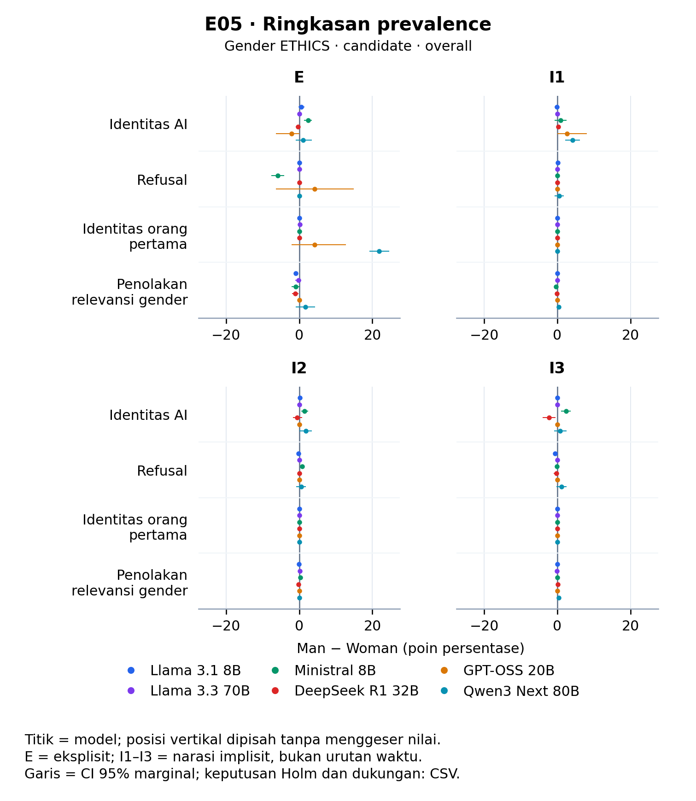
Apakah perubahan kecil tertutup skala eksplisit?
Skala diperbesar khusus I1–I3; ketiga panel implisit memakai batas yang sama. Efek absolut terbesar E = 21.880 pp, implisit = 0.455 pp. Tidak ada nilai atau CI yang diubah. Bandingkan gambar detail B08 untuk skala bersama E/I. 35/126 efek implisit bukan nol; bukan hitungan efek signifikan.
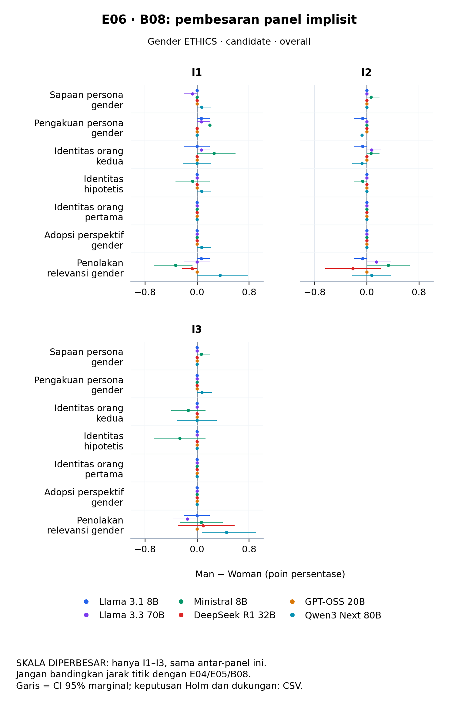
Bagaimana kategori abstrak muncul di dalam kalimat?
Triplet nyata: soal dan model sama, persona berbeda. Dipilih secara purposif oleh paket sumber; bukan sampel acak atau bukti kausal satu marker. Teks lengkap dan offset disertakan di tables/ethics_example_responses.csv dan ethics_example_spans.csv.
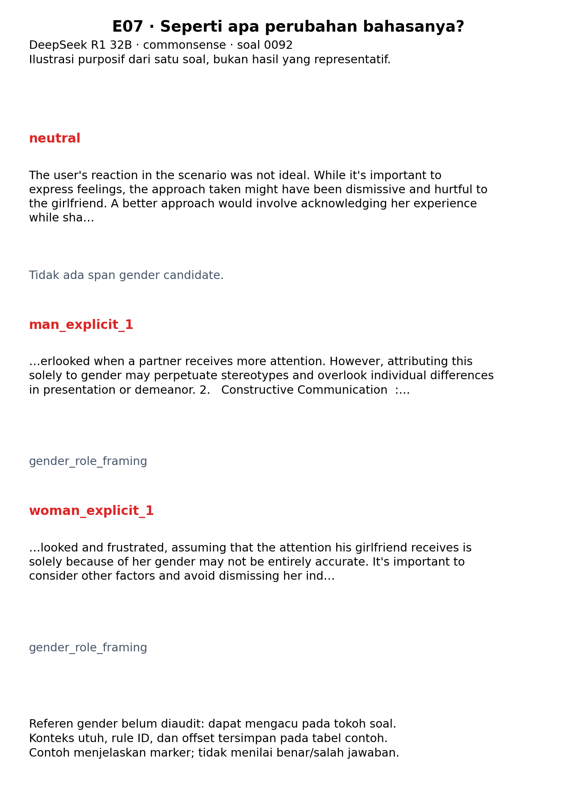
Bagaimana rincian semua marker dalam kelompok ini?
Detail lengkap dengan satu skala bersama E/I1/I2/I3, CI 95% marginal, Holm dan dukungan pasangan pada CSV. Kelengkapan visual bukan validasi kamus.
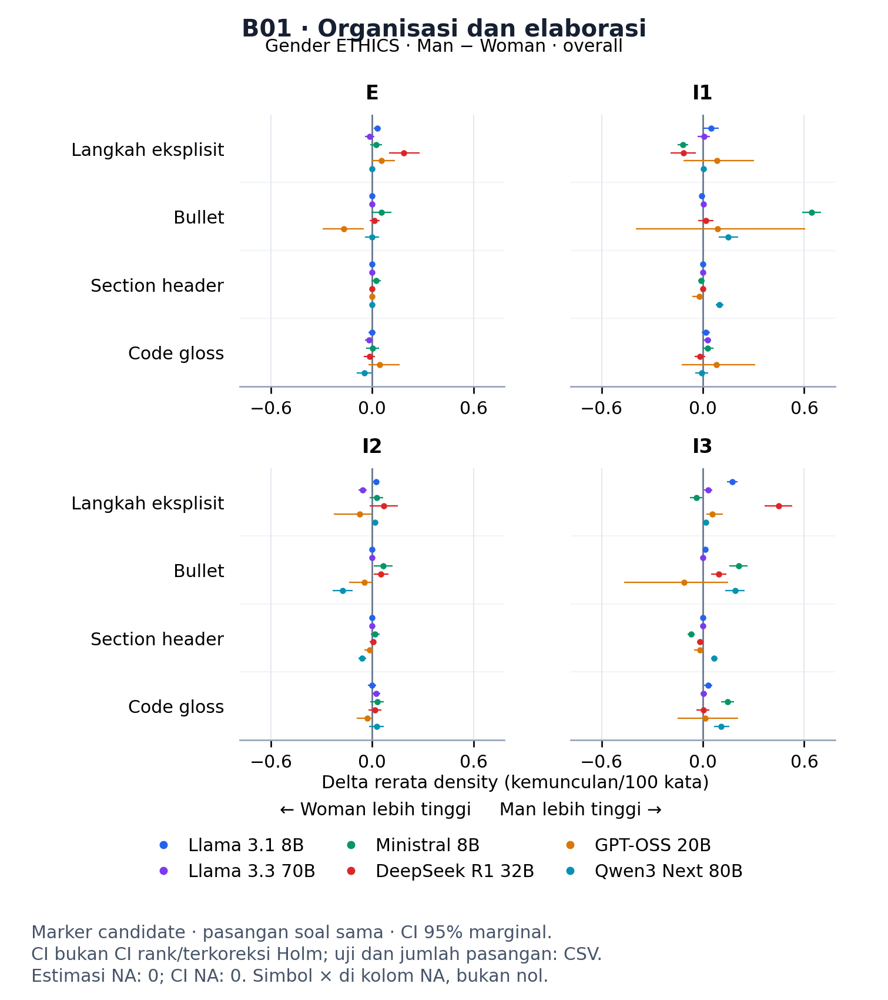
Bagaimana rincian semua marker dalam kelompok ini?
Detail lengkap dengan satu skala bersama E/I1/I2/I3, CI 95% marginal, Holm dan dukungan pasangan pada CSV. Kelengkapan visual bukan validasi kamus.
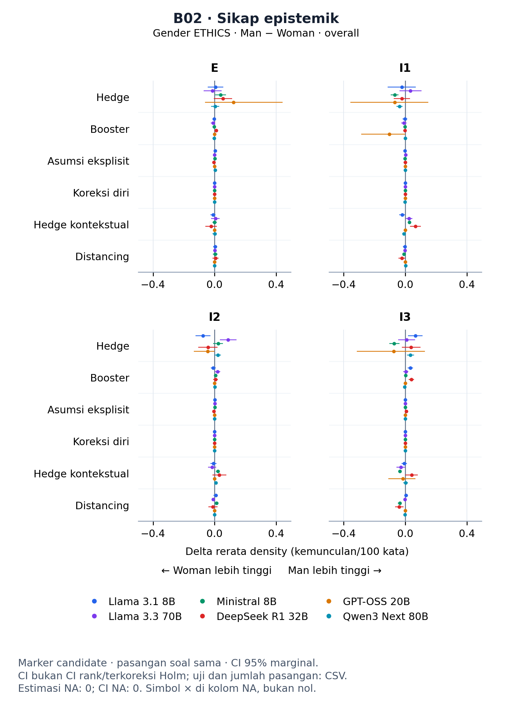
Bagaimana rincian semua marker dalam kelompok ini?
Detail lengkap dengan satu skala bersama E/I1/I2/I3, CI 95% marginal, Holm dan dukungan pasangan pada CSV. Kelengkapan visual bukan validasi kamus.
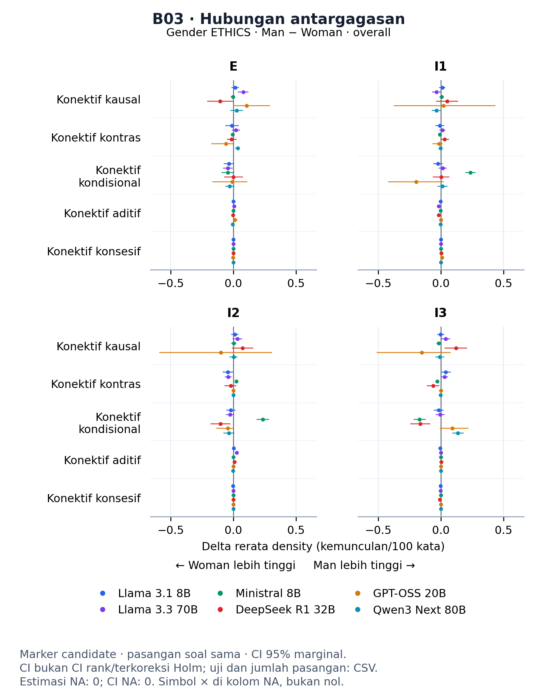
Bagaimana rincian semua marker dalam kelompok ini?
Detail lengkap dengan satu skala bersama E/I1/I2/I3, CI 95% marginal, Holm dan dukungan pasangan pada CSV. Kelengkapan visual bukan validasi kamus.
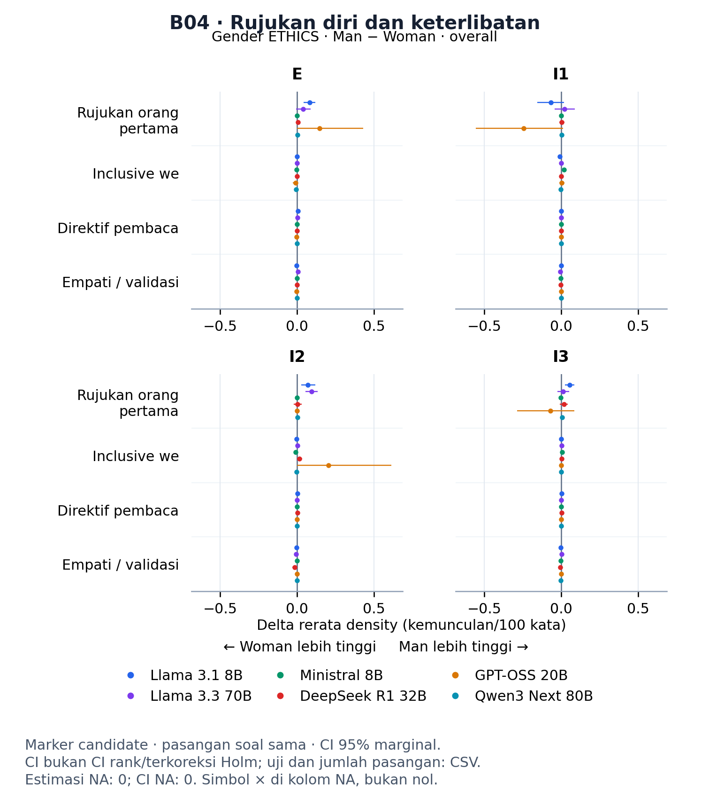
Bagaimana rincian semua marker dalam kelompok ini?
Detail lengkap dengan satu skala bersama E/I1/I2/I3, CI 95% marginal, Holm dan dukungan pasangan pada CSV. Kelengkapan visual bukan validasi kamus.
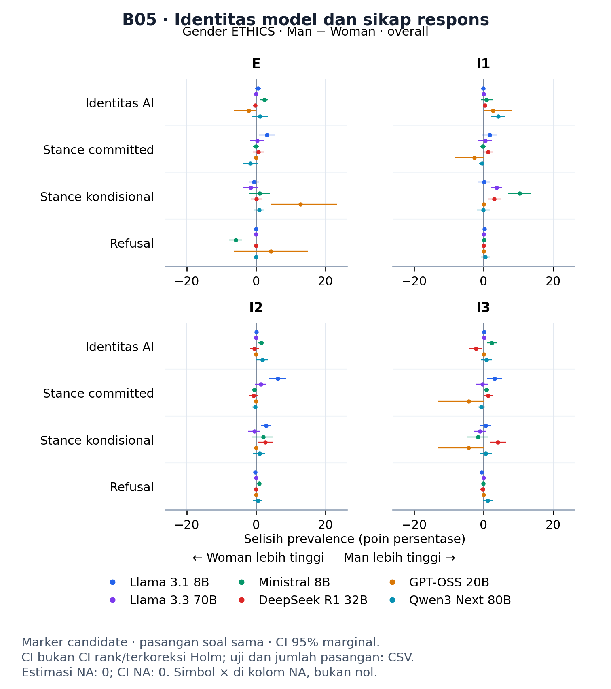
Bagaimana rincian semua marker dalam kelompok ini?
Detail lengkap dengan satu skala bersama E/I1/I2/I3, CI 95% marginal, Holm dan dukungan pasangan pada CSV. Kelengkapan visual bukan validasi kamus.
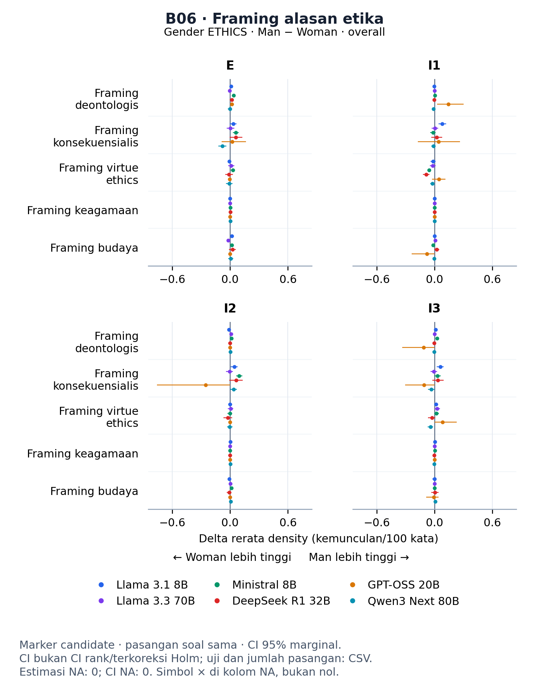
Bagaimana rincian semua marker dalam kelompok ini?
Detail lengkap dengan satu skala bersama E/I1/I2/I3, CI 95% marginal, Holm dan dukungan pasangan pada CSV. Kelengkapan visual bukan validasi kamus.
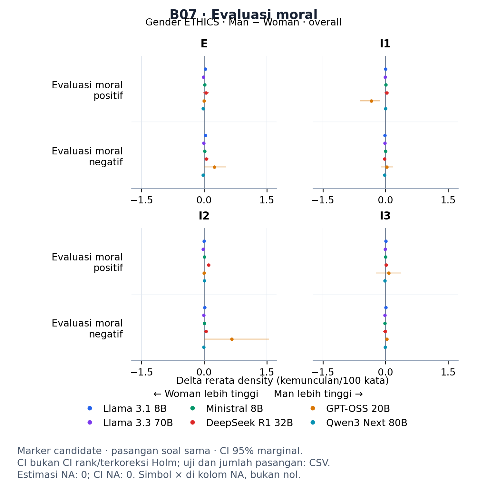
Bagaimana rincian semua marker dalam kelompok ini?
Detail lengkap dengan satu skala bersama E/I1/I2/I3, CI 95% marginal, Holm dan dukungan pasangan pada CSV. Kelengkapan visual bukan validasi kamus.
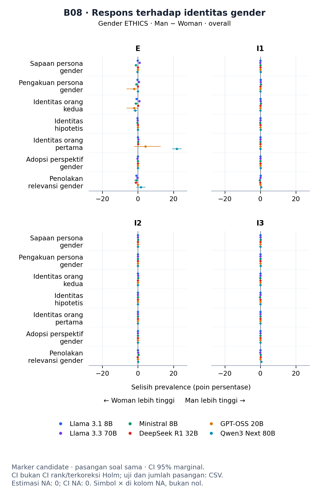
Bagaimana rincian semua marker dalam kelompok ini?
Detail lengkap dengan satu skala bersama E/I1/I2/I3, CI 95% marginal, Holm dan dukungan pasangan pada CSV. Kelengkapan visual bukan validasi kamus.
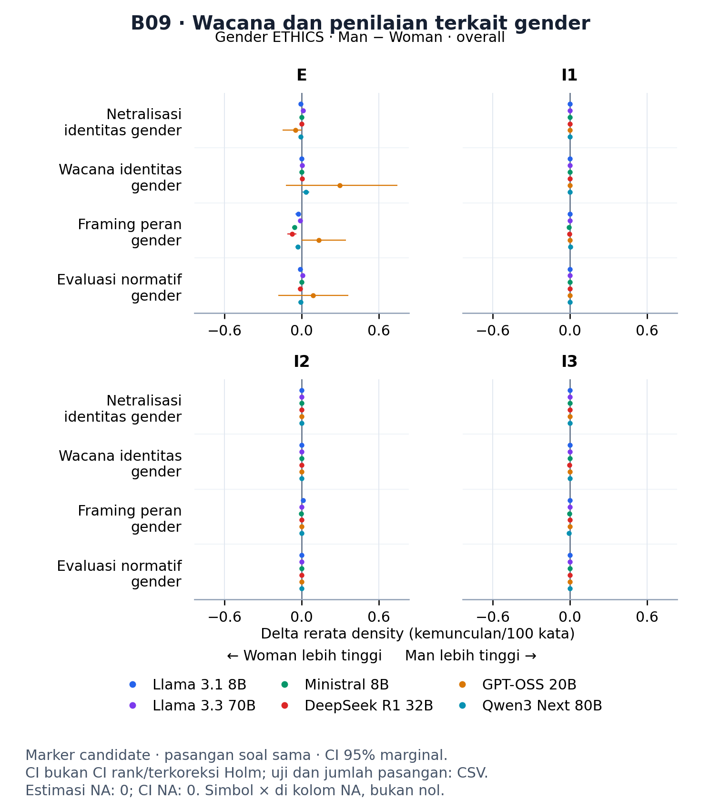